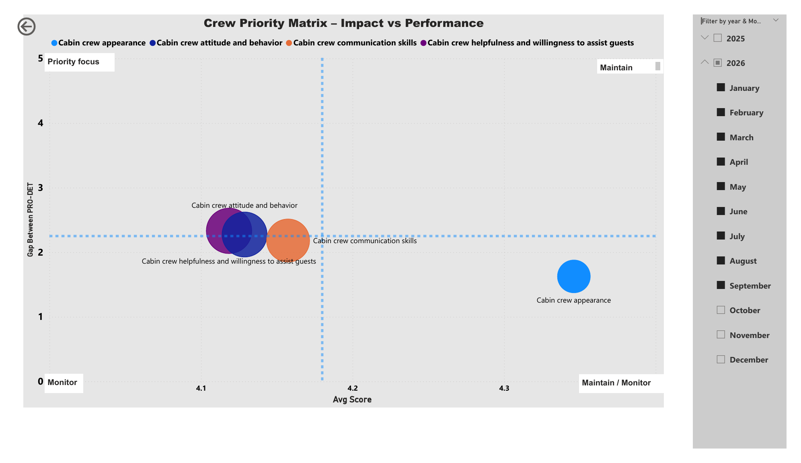
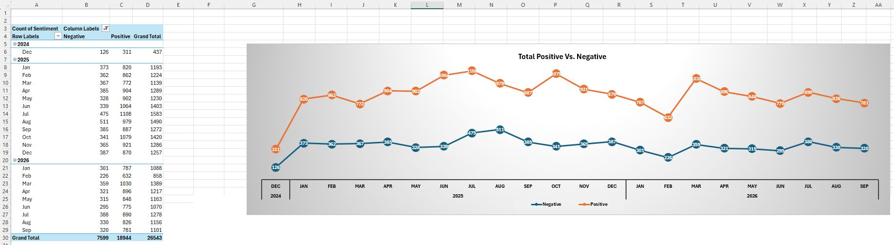
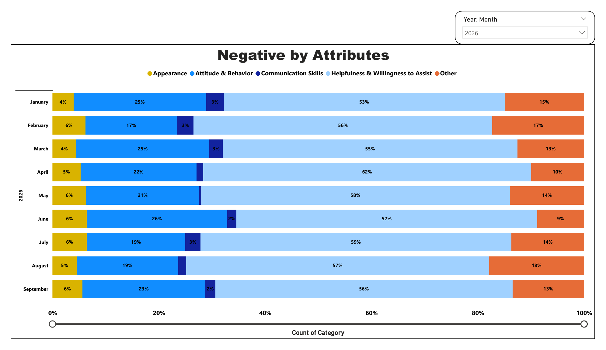
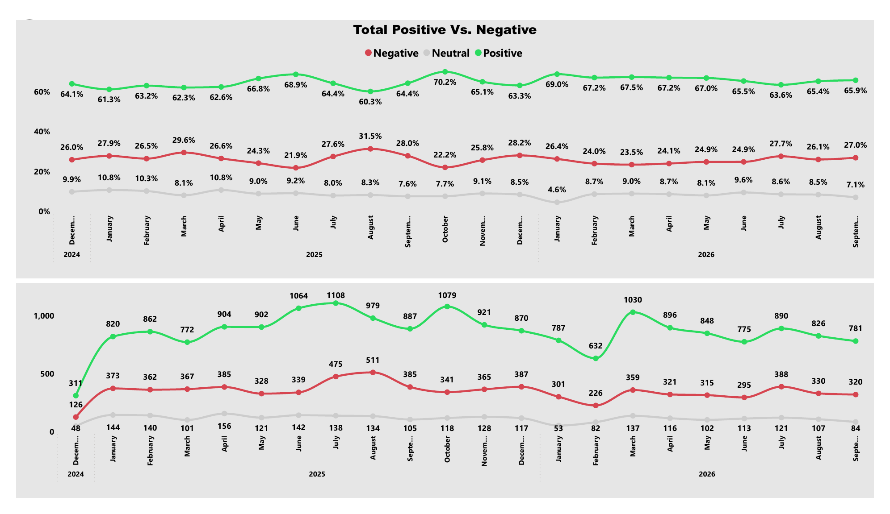

Data analytics · Voice of the Customer
Cabin service analytics and guest feedback
Contributions from · Reporting developed through

My contribution
I built and operated an Excel workflow to classify guest feedback, matched it to flight and crew records in Access, and developed Power BI reporting for supervisors and management.
How teams used the work
The reports brought service trends, case status, closure actions, and handling time into one view. They supported case follow-up and the selection of topics for crew awareness sessions.
The Crew Priority Matrix compared service attribute scores with the gap between promoter and detractor ratings to guide discussion of improvement priorities.
From feedback to an operational decision
Excel supported daily review and follow-up, and Access matched feedback to roster records. A separate report compared feedback volumes alongside departure volumes to provide operational context when interpreting changes.
A proposed workflow would let teams record several issues under one survey. Each issue could have its own owner, so a catering problem and the crew’s response could be reviewed separately while counting the survey once.
Excel · Access · Power Query · DAX · Power BI
Excel · Feedback classification & case tracking
The Excel workflow I built
I developed the operational workbook behind the reporting, connecting feedback classification with case follow-up and recurrence checks. I later used Power BI for report presentation while retaining Excel for data preparation, review, and follow-up.
-
Organize and classify feedback
I standardized flight and date fields, then used Arabic and English keyword rules to categorize comments into service themes for review.
-
Track ownership and follow-up
I organized case owners, status, actions, and closure dates. Formulas calculated elapsed handling days for open or closed cases and the delay between departure and reporting.
-
Identify recurring feedback
I built COUNTIF summaries across positive and negative records for 2025 and 2026 to identify repeated crew-linked feedback. PivotTables and charts summarized monthly patterns.

Excel techniques used
LET, TRIM, and text functions supported flight-number preparation. Nested IF, OR, ISNUMBER, and SEARCH supported bilingual keyword categorization, returning the first matching category for review. Date calculations used TODAY for open cases, while COUNTIF summarized repeated records. Validation lists and conditional formatting supported consistent review.


Original pages exported from my Power BI report. Figures reflect the selected filters at export. Select an image to view it at full size.